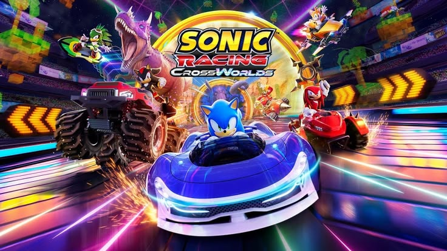
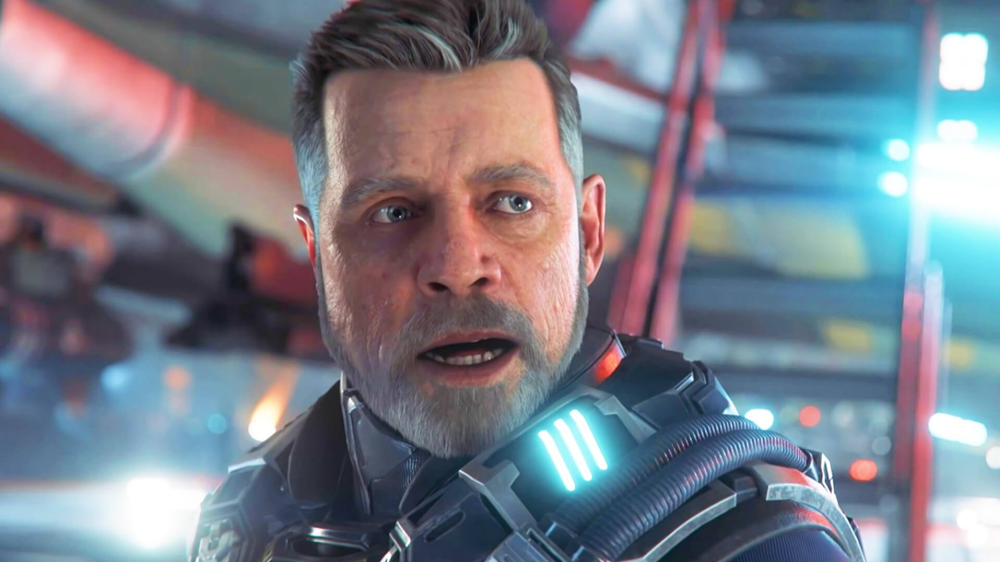
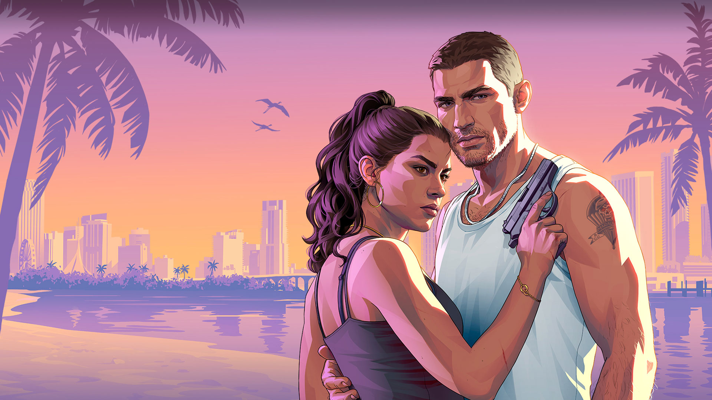
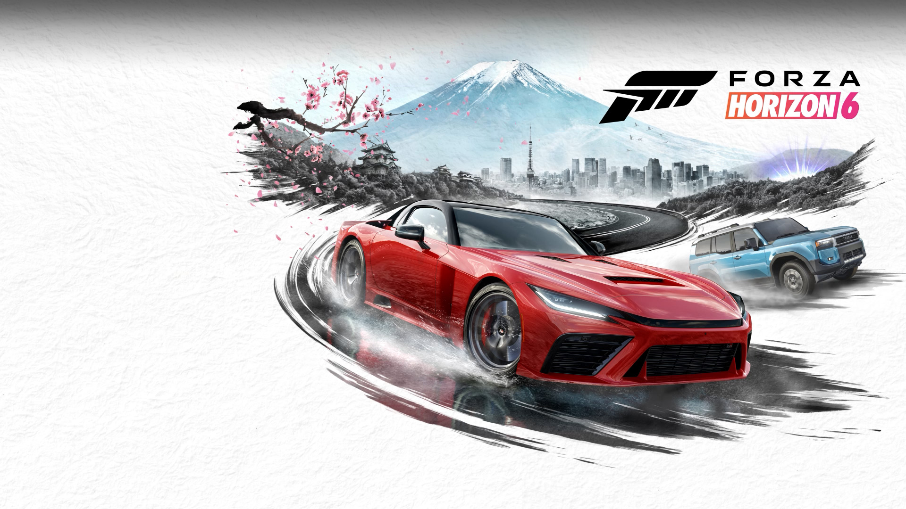
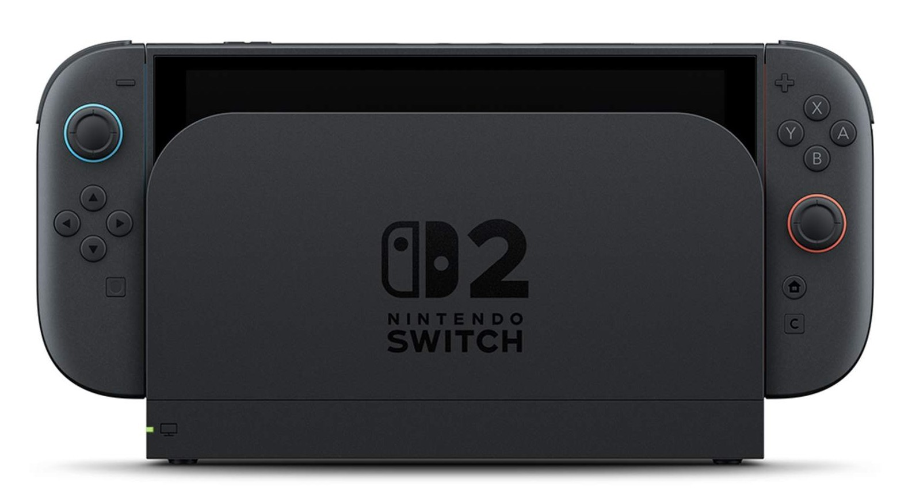

A SEGA anunciou novas atualizações para Sonic Racing: CrossWorlds, incluindo colaborações com franquias famosas, como Godzilla e Evangelion. Os conteúdos trarão novos personagens, veículos e pistas, mantendo o jogo atualizado e oferecendo novas experiências aos jogadores.

O jogo de ficção científica Squadron 42 ganhou uma página na Steam e tem lançamento previsto para o segundo trimestre de 2027. O título promete uma campanha cinematográfica com combates espaciais, exploração e uma história ambientada no universo de Star Citizen.

GTA VI voltou a gerar discussões após relatos sobre possíveis vazamentos de materiais confidenciais. Entretanto, essas informações ainda precisam ser verificadas. O jogo é um dos lançamentos mais aguardados, com uma aventura ambientada em Vice City e protagonizada por Jason e Lucia.

Forza Horizon 6 tem lançamento previsto para o PlayStation 5 em 26 de janeiro de 2027. Ambientado no Japão, o jogo oferecerá corridas, exploração em mundo aberto e diversos veículos. A chegada ao console da Sony amplia o público de uma franquia tradicionalmente associada ao Xbox e ao PC.

O Brasil foi destaque em uma reportagem sobre os principais mercados da Nintendo. O interesse dos brasileiros por franquias como Super Mario, Pokémon e The Legend of Zelda reforça a importância do país para a indústria. Porém, preços e disponibilidade continuam sendo fatores importantes para os consumidores.